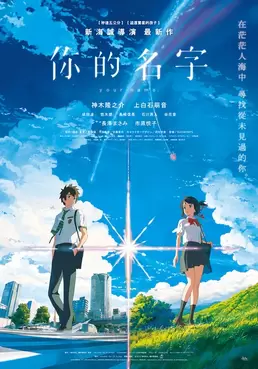

我最爱的电影
海 王
主演：杰森·莫玛、艾梅柏·希尔德、叶海亚·阿卜杜勒-...
类型：动作. 科幻
《海王》是由美国华纳兄弟影片公司出品，
温子仁执导，杰森·莫玛、艾梅柏·希尔德等主演的动作奇幻电影，
于2018年12月7日在中国上映，2018年12月21日在美国上映。
该片根据DC漫画《海王》改编，主要讲述了亚瑟·库瑞
认识到他家族血脉的真谛的过程，以及和湄拉一同对抗
对人类怀有更深敌意的同母异父的兄弟——海洋领主奥姆的故事。
速度与激情8
主演：范·迪塞尔、道恩·强森
《速度与激情8》是一部由F·加里·格雷执导，
范·迪塞尔、道恩·强森、查理兹·塞隆等主演的动作
犯罪、惊悚类型的电影，于2017年4月14日在中国
上映
影片讲述了神秘冷艳的黑科技高手赛弗的出现，
导致多米尼克心里叛变，直接使整个飞车家族
陷入危险境地的故事。
你的名字

主 演：
神木隆之介，上白石萌音，长泽雅美，市原悦子，成田凌
类 型：
动画，剧情，爱情
故事发生的地点是在每千年回归一次的彗星造访过一个月之前，
日本飞驒市的乡下小镇糸守町。在这里女高中生三叶每天都过
着忧郁的生活，而她烦恼的不光有担任镇长的父亲所举行的选
举运动还有家传神社的古老习俗。在这个小小的城镇，周围都
只是些爱瞎操心的老人。为此三叶对于大都市充满了憧憬。
然而某一天，自己做了一个变成男孩子的梦。这里有着陌生的房间、
陌生的朋友。而眼前出现的则是东京的街道。三叶虽然感到困惑，
但是能够来到朝思暮想的都市生活，让她觉得神清气爽....